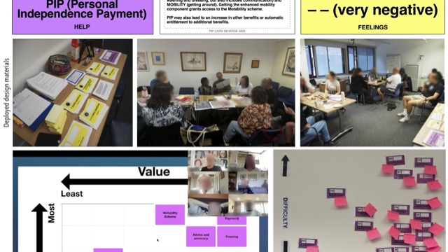

Advokit
Advokit is an inclusive, GenAI-enhanced digital toolkit designed to help people with aphasia navigate welfare and public services — benefits, housing, healthcare and the complex bureaucracy that surrounds them. It emerged from the recognition that existing digital services are largely inaccessible to people with communication disabilities, and that the stakes of exclusion — lost entitlements, failed appeals, financial hardship — are extremely high.
The project was built through an extensive co-design process with stroke survivors with aphasia, speech and language therapists and welfare advisors at Aphasia Re-Connect. Over a series of participatory workshops, co-designers shaped every feature of the toolkit — from the vocabulary of benefit navigation guides to the visual design of plain-language summaries generated by LLMs. The design process is documented in two peer-reviewed papers presented at CHI 2026 and submitted to ASSETS 2026.
Advokit includes tools for benefit story generation, community knowledge sharing and plain-language assistance. A schema-driven agentic pipeline ensures LLM outputs meet strict accessibility and safety requirements — critical in a context where errors can directly harm vulnerable users. The toolkit is now live and has been adopted for UK-wide rollout by the Stroke Association and the Department for Work and Pensions.